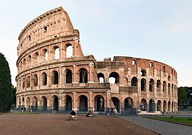

| Tokio Tower |
 |
Tokyo Tower is a communications and observation tower in the Shiba-koen district of Minato
|
- Tokio
- Japan
- 13.96 million people
- 35.6764° N, 139.6500° E

|
| Chichen Itza |
 |
Chichén Itzá was a large pre-Columbian city built by the Maya people of the Terminal Classic period.
|
- Yucatan
- Mexico
- 127.5 million people (2022)
- 23.6345° N, 102.5528° W
.png)
|
| Great Wall of China |
 |
The Great Wall of China is a series of fortifications that were built across the historical northern borders of ancient Chinese states
|
- Huairou District
- China
- 1.412 billion people (2022)
- 35.8617° N, 104.1954° E

|
| The Colosseum |
 |
It is the largest ancient amphitheatre ever built, and is still the largest standing amphitheatre in the world, despite its age.
|
- Rome
- Italy
- 58.94 million people (2022)
- 41.8719° N, 12.5674° E

|
| Taj Mahal |
.jpeg) |
It is one of the most famous mausoleums of white marble around the world which is visited by millions of tourists from across the world every year
|
- Uttar Pradesh
- India
- 1.417 billion people (2022)
- 20.5937° N, 78.9629° E

|